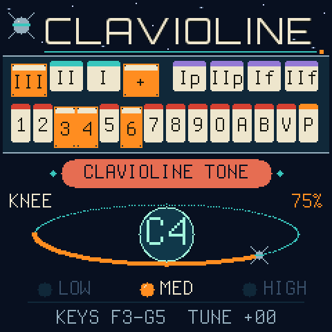

The early synthesizer behind the Space Age sounds of "Telstar", in your pocket.
Turns the FM-1 into the 1947 Clavioline, rebuilt from original circuit diagrams. 13 tone tablets interact like the real coil network. A percussive attack, three-speed vibrato and the Concert model's sub-octaves modify the sound further.
Download the firmware Install with the Firmware Hub
Controls
The Clavioline plays one note at a time. Hold several keys and the highest sounds; slide between held keys and the note changes without a new attack.
KEYS
Play. MIDI notes in, over USB or the TRS jack, play too.
GLO
STOPS mode: the keys become the tablets to modify the sound. GLO or HOME goes back.
PRESETS knob
The knee lever: the expression swell. Pushing it drives the valve amplifier harder. MIDI CC 11 moves it too.
SELECT knob
43 voicings, drawn from historical lists, then 4 user slots.
OCT− / OCT+
The coupler: LOW, MED or HIGH.
MASTER
Volume.
ALGORITHM
Shift the 27 keys up an octave to reach the top of the original's 36.
SAVE
Store the tablets and coupler in the user slot shown.
SEQ
Options the original didn't have, to help recreate an authentic sound: pluck decay, knee lever speed, portamento.
KNOB 1
Fine tuning.
The stops - press GLO
The keys become the tablets to modify the sound. Most tablets switch capacitors and resistors into one shared network of coils, so they don't simply add up: each changes what the others do. That's how a short row of switches imitated violins, oboes and organs.
| IIIIII | Vibrato speed, fast to slow (6.5, 5.5, 4.5 Hz) |
| + | Vibrato depth: deep instead of shallow |
| IpIIp | One and two octaves below, soft (Concert model) |
| IfIIf | One and two octaves below, loud |
| 1–9 | Resonances that combine: 1 and 2 strong formants, 3 and 4 softer, 5 and 6 colour with others, 7 to 9 brighter |
| O | Smooth: damps the resonances |
| A | Vocal: a forward mid-range |
| B | Reedy: thin, the bass cut away |
| V | Veiled: darker upper harmonics |
| P | Pluck: each note starts with a sharp peak, matched to a recording of a real Clavioline |
Preset sounds
Voicings come from a 1952 Electronic Engineering table and Selmer's instrument cards (and three brand new sounds).